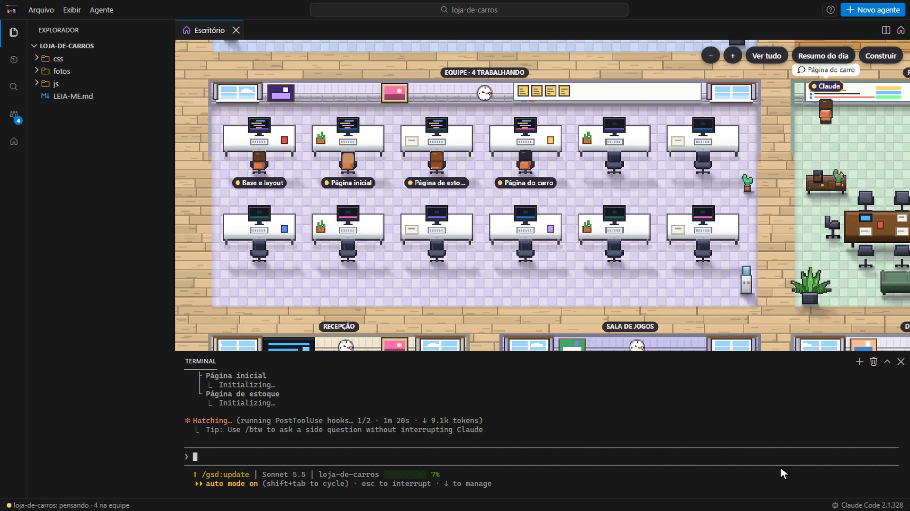
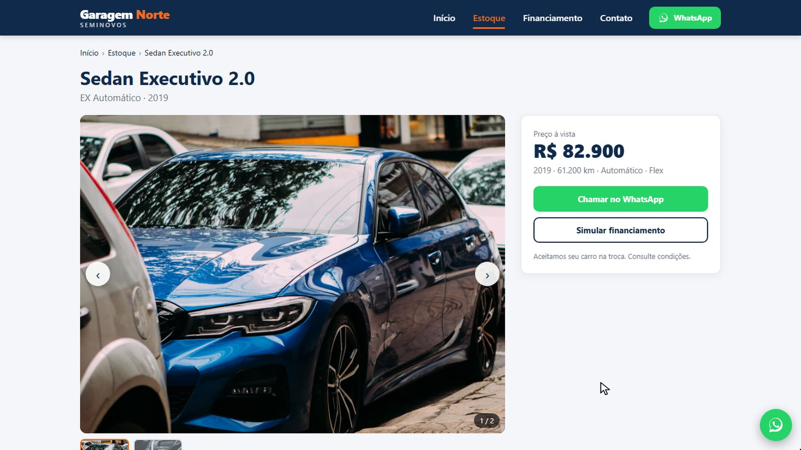
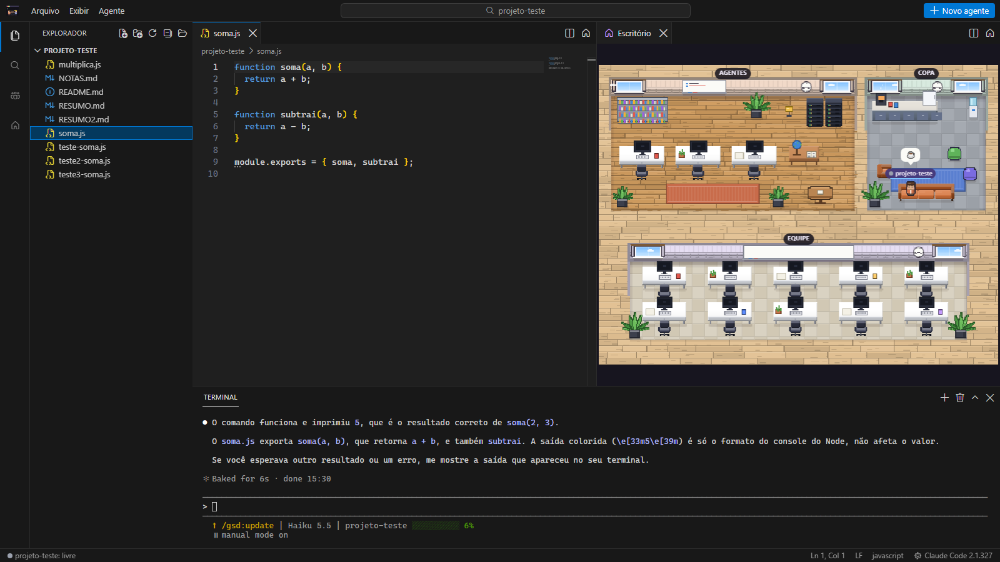
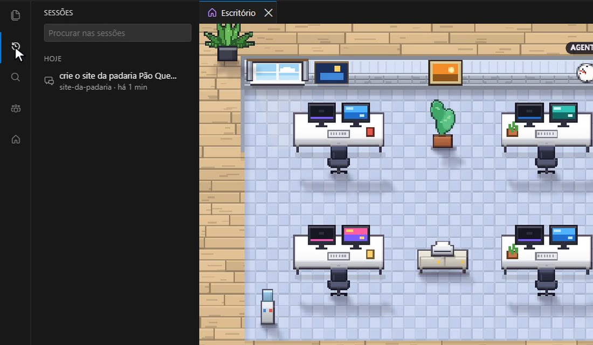
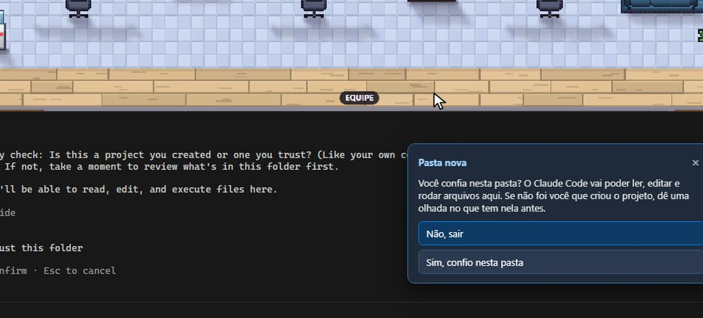
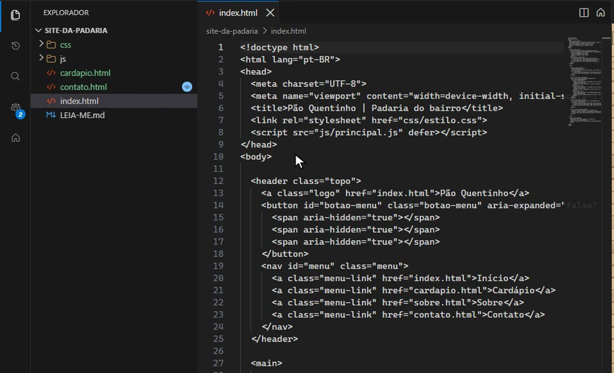
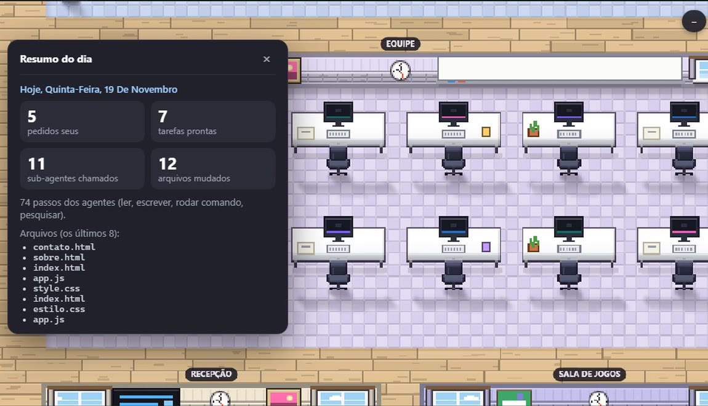
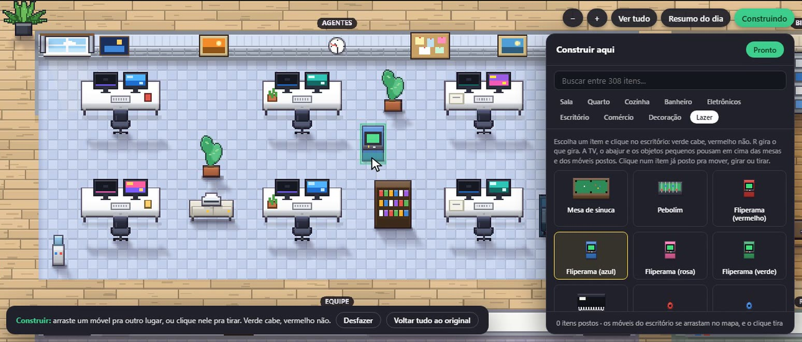

Descreva o que você quer. A IA constrói.
Sites, sistemas, SaaS e aplicativos web, sem escrever o código você mesmo. O Claude Code, o Codex ou o Antigravity trabalha no seu projeto, num editor só. E você vê cada agente trabalhando.
No vídeo: o site completo de uma loja de carros, feito pela IA dentro do Agentic Code.
Da ideia ao projeto, em português
Você diz o que quer. O agente escreve o código, cria os arquivos e roda os comandos. Você acompanha e ajusta.
Sites
Peça a página de uma empresa ou uma loja com catálogo e filtros.
Sistemas
Peça um cadastro, um painel, o controle que a sua empresa precisa.
SaaS
Descreva a sua ideia de produto, com login e área do cliente.
Aplicativos web
Peça ferramentas que abrem no navegador, no computador e no celular.
Abra, descreva, acompanhe
- 1
Abra a pasta do projeto
Nova ou que você já tem. Os arquivos aparecem no explorador.
- 2
Descreva o que você quer
No terminal, pro agente que você usa.
- 3
Acompanhe e ajuste
Os arquivos mudam na tela enquanto ele trabalha. Abra, leia, edite e peça o próximo passo.


Tudo o que você precisa, numa janela só
Explorador, abas, editor, pesquisa e um terminal de verdade, aqui dentro.
CÓDIGO, TERMINAL E AGENTE
Você vê o código nascendo
O arquivo que o agente escreve muda na tela sozinho.
- Explorador com as suas pastas
- Abas e dois editores lado a lado
- Pesquisa em todos os arquivos
- O terminal do agente embaixo

SESSÕES SALVAS
Feche hoje, continue amanhã
Cada conversa com o Claude Code fica salva, com o primeiro pedido como título. Um clique e ela volta inteira, mesmo depois de fechar o programa.

Claude Code, Codex e Antigravity num editor só
Use o agente que você já tem. Cada um tem o seu boneco no escritório.
E você vê cada agente trabalhando
Enquanto ele trabalha, o boneco dele anda por um escritório em pixel art. Bate o olho e você sabe o que ele está fazendo.
- ESCREVENDONa mesa dele, digitando.
- LENDO ARQUIVONas estantes da biblioteca.
- RODANDO COMANDONos racks dos servidores.
- PESQUISANDONo globo, buscando na web.
- PLANEJANDONo quadro branco e na mesa de reunião.
- LIVRECafé na copa, sofá ou ping-pong.
Pedido grande vira uma equipe
O Claude trabalha como chefe: divide o pedido entre sub-agentes, todos ao mesmo tempo, e confere tudo no fim.
- Cada sub-agente ganha uma mesa no salão da Equipe
- A tarefa dele aparece na etiqueta
- O quadro das tarefas mostra o que já ficou pronto
- Clicou num funcionário, abre o arquivo que ele está mexendo
Feito pra você não perder nada

Perguntas em português
Quando o Claude Code pergunta algo, aparece um cartão em português com um botão por resposta. E ele te responde em português.

Você vê onde ele mexe
O arquivo que o agente lê ou escreve ganha a marca dele. O que acabou de mudar fica verde.

O resumo do dia
Pedidos, tarefas prontas, sub-agentes e arquivos mudados. Hoje e no último dia de trabalho.

O escritório é seu
Arraste os móveis, tire o que quiser e ponha os do catálogo: móveis, eletrônicos, decoração e até fliperama.
O Windows te chama
Foi pra outra janela e o agente parou pra te perguntar algo? Chega um aviso com som. Um clique e você está no terminal dele.
Roda no seu computador
O programa e os seus projetos ficam na sua máquina.
Junto com o programa, quatro cursos
Do primeiro clique ao seu sistema no ar, protegido.
- 1
Instalar, ativar e usar
O Agentic Code de ponta a ponta.
- 2
Criar sites com o Agentic Code
Curso completo.
- 3
Criar sistemas, SaaS e aplicativos web
Curso completo.
- 4
Cibersegurança: proteger o seu site e o seu sistema
Curso completo.
O que você precisa
- 1Um PC com Windows 10 ou 11Não funciona no Mac nem no Linux.
- 2Pelo menos um agente instalado, com a sua contaO Claude Code com uma assinatura do Claude, ou o Codex, ou o Antigravity.
- 3Internet pra ativarA ativação é no primeiro uso, com o e-mail da compra.
O Agentic Code não inclui nem substitui a assinatura do Claude, do Codex ou do Antigravity. Ele é o editor onde o agente que você já tem trabalha.
Tudo isso no seu computador
- O Agentic Code, o editor de vibecoding pra Windows
- Explorador, editor, pesquisa e o terminal do seu agente
- Claude Code, Codex e Antigravity num editor só
- Sessões salvas, perguntas em português, aviso do Windows e resumo do dia
- O escritório dos agentes e a equipe de sub-agentes do Claude
- O modo Construir, com o catálogo de móveis
- Curso: instalar, ativar e usar
- Curso completo: Criar sites com o Agentic Code
- Curso completo: Criar sistemas, SaaS e aplicativos web
- Curso completo: Cibersegurança: proteger o seu site e o seu sistema
- 1 ano de licença, com todas as atualizações
Depois da compra, você baixa pelo link com o e-mail da compra e os 4 últimos números do CPF, e ativa no primeiro uso.
Não gostou, devolvemos o seu dinheiro.
Perguntas
O que é vibecoding?
É construir conversando: você descreve o que quer e o agente de IA escreve o código. No Agentic Code você faz isso com o Claude Code, o Codex ou o Antigravity, vendo os arquivos e o agente trabalhando.
Preciso ter o Claude Code, o Codex ou o Antigravity?
Sim. Pelo menos um deles, instalado e com a sua conta: o Claude Code com uma assinatura do Claude, ou o Codex, ou o Antigravity. O Agentic Code não inclui nem substitui essa assinatura.
Preciso escrever código?
Não precisa escrever o código você mesmo: você descreve e o agente escreve. Se quiser mexer, o editor está ali. Os cursos mostram o caminho, do primeiro site ao sistema.
O que vem no curso?
Quatro partes: instalar, ativar e usar o Agentic Code, e três cursos completos: "Criar sites com o Agentic Code", "Criar sistemas, SaaS e aplicativos web" e "Cibersegurança: proteger o seu site e o seu sistema".
Funciona no Mac ou no Linux?
Não. Só no Windows 10 ou 11.
A equipe de sub-agentes funciona com todos?
A equipe, as perguntas em português e as sessões salvas são do Claude Code. O Codex e o Antigravity rodam no terminal do programa e têm o boneco deles no escritório.
Como recebo depois da compra?
Você baixa pelo link com o e-mail da compra e os 4 últimos números do CPF. Instala, abre e ativa no primeiro uso.
Posso usar em mais de um computador?
A sua cópia é pessoal, ligada à sua licença e ao seu computador.
O acesso é pra sempre?
Não. É uma licença de 1 ano, com todas as atualizações. Depois, é só renovar.
Os meus projetos saem do meu computador?
O Agentic Code roda no seu computador e não mexe nos seus projetos por conta própria. O que vai pra fora é o que o próprio agente já manda, como sempre mandou.
O Windows mostra algum aviso na instalação?
Pode mostrar o aviso de app desconhecido. É só clicar em "Mais informações" e "Executar assim mesmo". O curso mostra o passo.
E se eu não gostar?
7 dias de garantia. Devolvemos o seu dinheiro.
O seu próximo site começa com uma frase.
Descreva. Veja a IA construir.